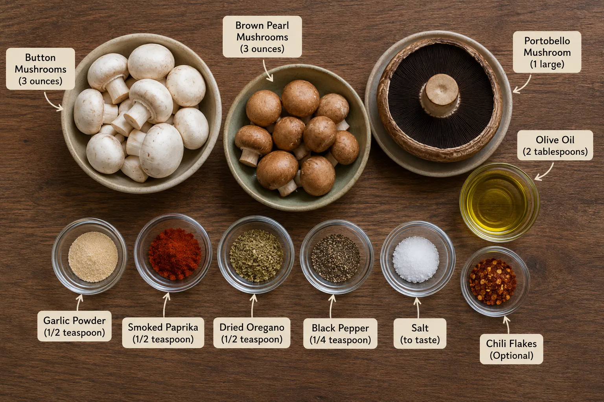
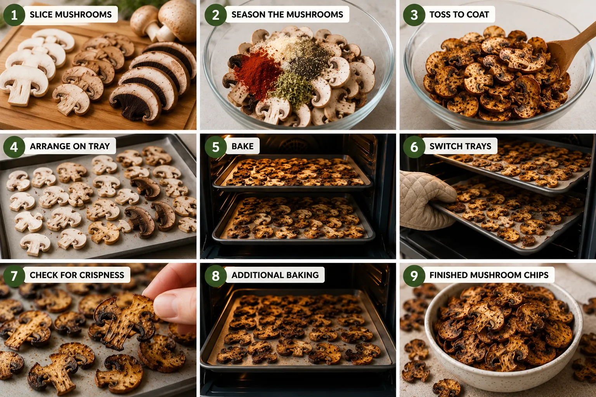

If you think mushrooms belong only in curries, soups, or stir-fries, these crispy oven-baked mushroom chips might change your mind. Thinly sliced mushrooms are lightly coated with olive oil, garlic, smoked paprika, black pepper, and herbs before being slowly baked until their edges become crisp and deeply savoury.
These chips are a lighter alternative to many fried snacks and work well as an evening snack, appetizer, or crunchy topping for soups and salads. The recipe uses simple seasonings, but the natural umami flavour of mushrooms makes the final result surprisingly satisfying.
Ingredients
For the recipe, use:

This keeps the base of your original recipe but gives the chips more flavor. I would not add wet sauces because extra moisture can make it harder for the mushroom slices to become crisp.
Instructions
Preheat the oven to 300°F (150°C) and line two baking trays with parchment paper.
Clean the mushrooms gently and slice them thinly, keeping the slices no more than ¼ inch thick. Try to keep the thickness reasonably consistent so they cook evenly.
Place the mushroom slices in a large bowl. Add olive oil, garlic powder, smoked paprika, oregano, black pepper, salt, and optional chili flakes.
Toss gently until the mushroom slices are lightly and evenly coated with the seasoning.
Arrange the slices in a single layer on the prepared baking trays. Avoid overlapping them because overcrowding can trap moisture and prevent crisping.
Place one tray in the upper half of the oven and the other in the lower half. Bake for 30 minutes.
Switch the positions of the trays and continue baking for another 30 minutes.
Check the mushroom chips for crispness. Smaller and thinner slices may be ready first, so remove those if necessary.
Bake thicker pieces and portobello slices for approximately 10 additional minutes, or until the edges are crisp and the mushrooms are properly dried.
Remove from the oven and allow the chips to cool for a few minutes before serving. They will become slightly firmer as they cool.

In Summation
Mushrooms don’t have to be served only stuffed, sautéed, or added to curries. When sliced thinly, lightly seasoned, and slowly baked, they can become a savory and flavourful snack with naturally rich umami character.
These oven-baked mushroom chips are simple enough for everyday snacking but flavourful enough to serve as an appetizer. The combination of garlic, smoked paprika, oregano, and black pepper gives the mushrooms a warm savoury flavour without overpowering their natural taste.